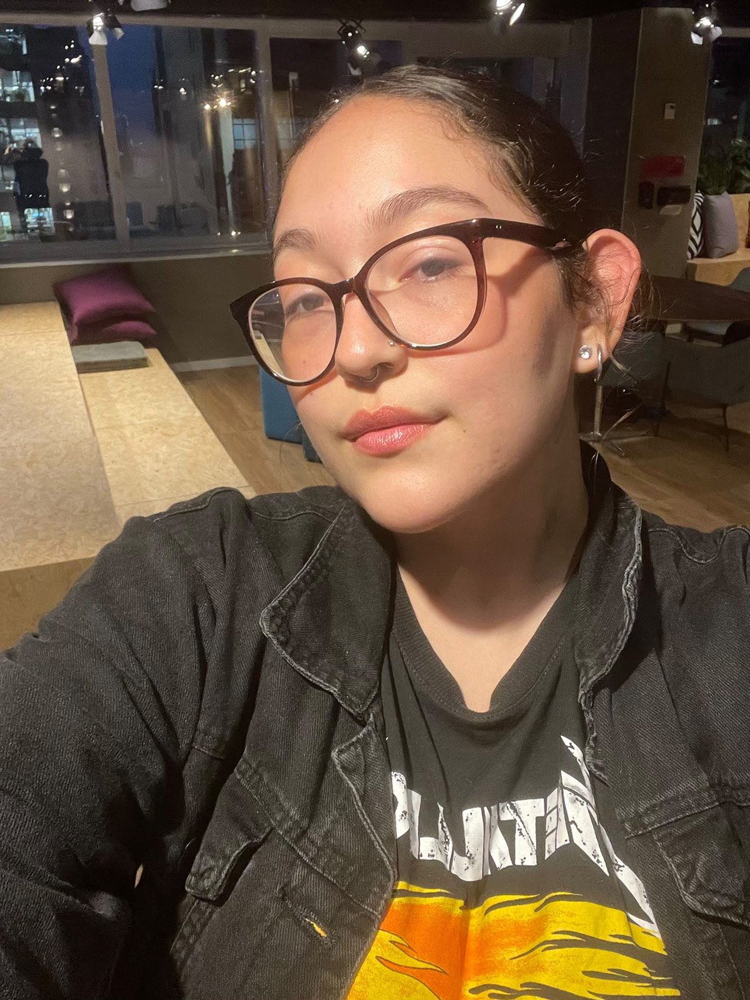

// operação em tempo real
Aplicação no Dia a Dia
O E.V.A. em operação: missão ao vivo, dashboard de sensores, agente IA e equipe de missão
Contador da Missão — em tempo real
Missão iniciada em 25 de maio de 2026
Dia -- da Missão
Calculando fase...
--
dias
:
--
horas
:
--
min
:
--
seg
Sensores IoT — Leituras Atuais
pH do Solo
7.1
pH
Umidade do Micélio
68
%
Nível de Radiação
64
μSv/h
Toxicidade (Perclorato)
17
ppm
Atividade Bioelétrica
63
mV
Temperatura do Dome
18
°C
Evolução das Métricas — Últimas 24h
pH · Umidade · Toxicidade · Bioelétrica
Fase 0 — Transporte da Carga Biológica · Dragon Capsule

SpaceX Dragon Capsule · Telemetria IoT em Tempo Real
dragon/telemetry/full · ESP32 · HiveMQ Cloud · MQTT/TLS
Antes que qualquer fungo possa atuar no solo marciano, ele precisa chegar lá vivo. Os consórcios fúngicos são acondicionados em câmaras criogênicas na cápsula Dragon. Um firmware ESP32 monitora 6 parâmetros ambientais críticos a cada 3 segundos via MQTT, acionando alertas LED e buzzer imediatamente se qualquer valor sair da faixa segura para sobrevivência fúngica.
Temperatura
4–25 °C
Umidade
>30 %
Pressão
0,9–1,1 atm
Radiação
<10 µSv/h
Oxigênio
>19,5 %
Aceleração
<2 G
Simulação disponível no Wokwi · Hardware: ESP32 DevKit V1 + DHT22 + sensores analógicos ·
Disciplina: Edge Computing & Computer Systems
IA Sentinel — Log de Atividade
12:47:32
Sistema inicializado. Conectando à rede de micélio...
12:47:45
Rede fúngica detectada. 24 nós ativos no setor A-C.
12:48:01
Alteração química detectada no setor B. Analisando...
12:48:15
Diagnóstico: Redução de perclorato 12%. Status: Positivo.
12:48:32
Iniciando liberação de enzimas na Fase 2...
12:48:47
Atividade bioelétrica aumentou 8% no setor B.
Status do Sistema
IA Sentinel
● ONLINE
24 Sensores IoT
● ATIVOS
Rede Fúngica
● EXPANDINDO
Shield Radiológico
◌ FASE 4
Análises realizadas (hora)
1,247
Equipe de Missão
Gustavo Almeida Ferreira
RM 566980
Lucas de Oliveira Miranda Caetano
RM 568036
Marco Túlio Longo Conte
RM 568373
Sofia Souza Rodrigues
RM 566708

Camile Vitória Silva
RM 566649
Stack Tecnológico
Fungos Micorrízicos
Sensores IoT
Machine Learning
Biologia Sintética
Análise Preditiva
Redes Neurais
Bioengenharia
Computação em Nuvem
Protocolo MQTT
Energia Solar